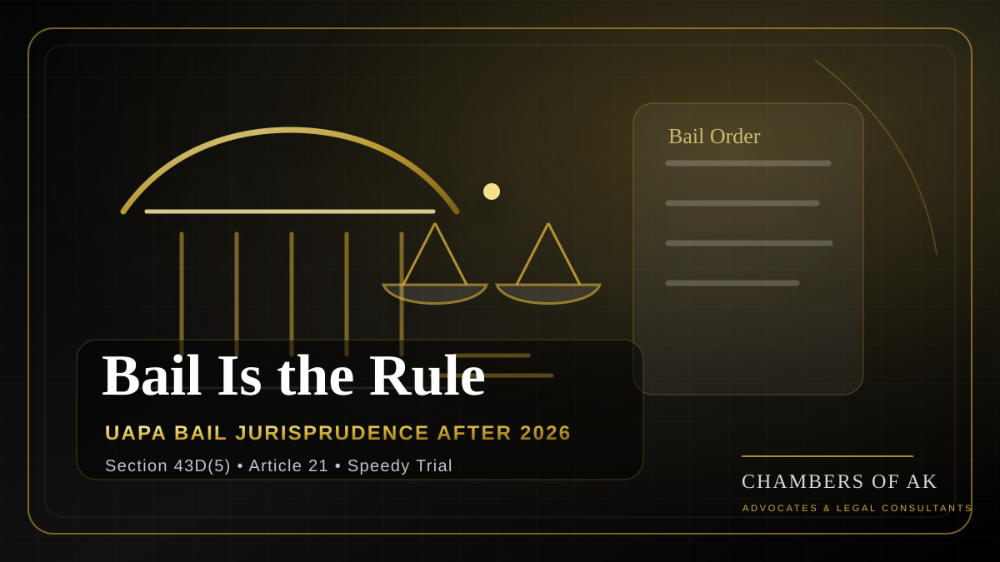

Can Section 43D(5) UAPA justify prolonged pre-trial incarceration? Chambers of AK examines the Supreme Court’s 2026 observations, Watali, K.A. Najeeb, Article 21, and the future of UAPA bail jurisprudence.

Executive Summary
- UAPA bail law is at a doctrinal crossroads. Section 43D(5) makes bail difficult, but it does not suspend Article 21.
- Watali remains the leading authority on the “prima facie true” standard.
- K.A. Najeeb supplies the constitutional safety valve for prolonged incarceration and delayed trials.
- Thwaha Fasal and Vernon Gonsalves show that courts can still examine whether the statutory ingredients are made out.
- The 2026 developments, especially Gulfisha Fatima and Syed Iftikhar Andrabi, show renewed tension between role-specific caution and Article 21 scrutiny.
Introduction
“Bail is the rule, jail is the exception” is a familiar principle of Indian criminal law. Under the Unlawful Activities (Prevention) Act, 1967, however, that principle operates within a strict statutory framework. Section 43D(5) restricts bail where the court finds reasonable grounds for believing that the accusation is prima facie true. In practice, this can keep an accused in custody for years before guilt is tested at trial.
The 2026 Supreme Court developments are important because they force a constitutional question: if the State invokes a special anti-terror statute but cannot complete the trial within a reasonable time, can Section 43D(5) continue to dominate Article 21? This article explains the issue neutrally. It does not comment on the factual guilt or innocence of any accused person.
Understanding Bail Under the UAPA
Ordinary bail law begins with the idea that pre-trial detention should not become punishment. Courts ordinarily consider the nature of accusation, severity of sentence, flight risk, possibility of witness influence, risk of tampering with evidence and the accused’s conduct. The presumption of innocence is the reason why conviction, not accusation, should carry punishment.
UAPA changes the practical balance. It does not abolish bail, but it places a statutory brake on release for offences under Chapters IV and VI. Because the statute deals with terrorism-related allegations, Parliament has chosen a higher threshold than ordinary bail. The constitutional problem arises when a strict threshold becomes a mechanism for prolonged pre-trial detention without a visible trial endpoint.
What Section 43D(5) Says
Section 43D(5) requires that the Public Prosecutor be heard before bail is granted for offences under Chapters IV and VI. It further states that the accused shall not be released on bail if the court, after looking at the case diary or the Section 173 CrPC report, believes there are reasonable grounds for finding the accusation prima facie true.
This is not a finding of guilt. The court does not conduct a full trial at the bail stage. Yet the provision forces the court to conduct a threshold merits-filter, and that makes UAPA bail different from ordinary bail. The prosecution material, if facially sufficient, can dominate the bail stage unless ingredient-based scrutiny or Article 21 review creates space for release.
The Watali Standard
In National Investigation Agency v. Zahoor Ahmad Shah Watali, the Supreme Court held that the court’s task under Section 43D(5) is to see whether the accusation is prima facie true on the material collected by the investigating agency. The Court cautioned against a mini-trial, detailed admissibility review or final credibility assessment at the bail stage.
Watali made UAPA bail substantially harder. But Watali should not be read as saying that every prosecutorial label is conclusive. A court can avoid a mini-trial and still ask whether the material, taken at its highest, actually satisfies the statutory ingredients of the charged offence against the particular accused.
K.A. Najeeb and the Article 21 Safety Valve
Union of India v. K.A. Najeeb restored a constitutional safety valve. A three-Judge Bench held that statutory restrictions on bail do not take away the constitutional court’s power to grant bail where prolonged incarceration and trial delay violate Article 21. Where there is no likelihood of trial being completed within a reasonable time, continued custody may become constitutionally impermissible.
Najeeb does not overrule Watali. It operates on a different plane. Watali answers the statutory question: is the accusation prima facie true? Najeeb answers the constitutional question: even if the statutory threshold is difficult, can the State continue to keep the accused in custody for years without a realistic trial endpoint?
Ingredient-Based Scrutiny: Thwaha Fasal and Vernon
In Thwaha Fasal v. Union of India, the Supreme Court indicated that mere association or possession of material is not enough unless the ingredients of the charged UAPA offences are made out. In Vernon v. State of Maharashtra, the Court again examined whether the prosecution material actually established the necessary statutory link to a terrorist act, conspiracy or membership allegation.
This strand prevents Section 43D(5) from becoming a label-based rule. The court may not conduct a full trial, but it can still ask a legal question: assuming the prosecution material is read at its highest, does it disclose the offence charged against this accused?
Delhi Riots Bail Litigation and Gulfisha Fatima
The Delhi riots UAPA bail litigation became one of the most visible arenas for these competing doctrines. In 2021, the Delhi High Court granted bail in the Asif Iqbal Tanha, Natasha Narwal and Devangana Kalita matters, emphasising that protest and public-order allegations should not automatically be escalated into terrorism allegations without satisfying the statutory threshold.
In Umar Khalid v. State (NCT of Delhi), the Delhi High Court refused bail in 2022 after accepting the prosecution’s higher-order conspiracy theory at the prima facie stage. The case illustrates how, under Watali, allegations of remote or supervisory conspiracy can become decisive at bail.
The Supreme Court’s January 2026 decision in Gulfisha Fatima v. State (Govt. of NCT of Delhi) granted bail to five accused but denied bail to Umar Khalid and Sharjeel Imam. The judgment turned heavily on role differentiation. It treated some accused as local-level facilitators or executors, while treating Umar Khalid and Sharjeel Imam as having a more principal or ideological role on the prosecution material. The judgment carried no dissent.
Gulfisha is therefore not a simple pro-bail or anti-bail ruling. It confirms that custody length matters, but also states that Najeeb is not a mathematical formula. Courts must consider custody along with role, trial stage, causes of delay, gravity and possible conditions.
The 2026 Supreme Court Developments
March 2026: Faster UAPA/NIA Trials
In March 2026, legal reporting recorded that the Supreme Court called for UAPA cases investigated by the National Investigation Agency to proceed on a day-to-day basis and be completed within one year through additional exclusive special courts. This is important because delay cannot be solved only through bail orders; the criminal-justice infrastructure must also move faster.
May 2026: Syed Iftikhar Andrabi
The May 2026 decision in Syed Iftikhar Andrabi v. National Investigation Agency is the sharpest recent development. The completed research note records that the Supreme Court granted bail after nearly six years of custody where hundreds of prosecution witnesses remained to be examined and trial completion was not realistically visible.
Andrabi’s doctrinal significance lies in precedent hierarchy. The Court reasserted that Najeeb, being a larger-Bench decision, cannot be diluted by later smaller-Bench formulations. Where custody is substantial and trial completion is remote, Article 21 remains a live constitutional check even under UAPA.
Does Section 43D(5) Override the Right to Speedy Trial?
No. Section 43D(5) changes the statutory bail threshold; it does not erase Article 21. A court may find that the accusation is prima facie true and still be required to ask whether continued detention has become constitutionally disproportionate because of custody length and trial delay.
This does not mean every UAPA accused is entitled to bail after a fixed number of years. Gulfisha cautions against a mechanical formula. But Najeeb and Andrabi require courts to ask concrete questions: how long has the accused been inside, what stage has the trial reached, how many witnesses remain, why has the delay occurred, and can strict conditions protect the process?
Is the Supreme Court Softening Watali?
The Court has not overruled Watali. Watali continues to govern the “prima facie true” inquiry. What has changed is the insistence that Watali cannot be the only question in long-custody cases. Ingredient-based scrutiny and Article 21 review now operate as constitutional correctives.
The post-2026 position is therefore best understood as a two-track framework. First, under Watali, the court asks whether the prosecution material discloses a prima facie true accusation. Secondly, under Najeeb and Andrabi, the court asks whether continued detention remains constitutionally permissible despite trial delay and prolonged custody.
Practical Implications
For defence lawyers, the strongest UAPA bail applications will be granular. They should identify the exact charged sections, show whether those sections fall within Chapters IV and VI, map the accused-specific role, test the statutory ingredients without inviting a mini-trial, and place hard custody data before the court.
For prosecutors, the post-Andrabi burden is not satisfied by repeating the seriousness of allegations. Once custody becomes prolonged, the State should be ready to explain trial progress, remaining witnesses, reasons for delay, risk of absconding, risk to witnesses, and why conditions cannot secure the process.
For trial courts, UAPA cases require active case management. Where hundreds of witnesses remain and the accused has already spent years in custody, adjournments become constitutionally relevant. For constitutional courts, the task is harmonisation: national security is a legitimate concern, but it does not create a constitutional vacuum.
Doctrinal Timeline
| Case / Development | Year | Bail Effect | Core Principle |
|---|---|---|---|
| NIA v. Watali | 2019 | Bail refused | Prima facie true standard; no mini-trial. |
| K.A. Najeeb | 2021 | Bail upheld | Article 21 can override statutory bail restrictions in extreme delay cases. |
| Thwaha Fasal | 2021 | Bail granted | Mere association or possession is insufficient without statutory ingredients. |
| Vernon | 2023 | Bail granted | Ingredient-based scrutiny and role-specific analysis remain available. |
| Gurwinder Singh | 2024 | Bail refused | Delay alone may not automatically justify bail on every fact pattern. |
| Gulfisha Fatima | 2026 | Bail granted to five; denied to Umar Khalid and Sharjeel Imam | Role differentiation; Najeeb is not a mathematical formula. |
| Syed Iftikhar Andrabi | 2026 | Bail granted | Najeeb reaffirmed as binding larger-Bench law in long-custody cases. |
Key Takeaways
- Section 43D(5) remains a stringent statutory bail restriction.
- Watali still governs the prima facie true inquiry.
- Najeeb remains the leading Article 21 safety valve.
- Thwaha Fasal and Vernon allow statutory-ingredient scrutiny.
- Gulfisha confirms role-specific analysis and rejects a purely mechanical custody-duration formula.
- Andrabi strengthens the argument that long custody with no realistic trial endpoint can make continued detention unconstitutional.
Frequently Asked Questions
What is Section 43D(5) of the UAPA?
It is the special UAPA bail restriction for offences under Chapters IV and VI. If the court finds reasonable grounds for believing that the accusation is prima facie true, bail is barred at the statutory level.
Is bail possible in UAPA cases?
Yes. Bail is difficult but not impossible. Courts may grant bail where the statutory ingredients are not made out or where prolonged custody and trial delay violate Article 21.
What did K.A. Najeeb decide?
K.A. Najeeb held that statutory restrictions do not eliminate constitutional bail power where continued custody becomes inconsistent with Article 21.
Does prolonged incarceration automatically mean bail?
No. The court still considers role, gravity, trial stage, causes of delay and conditions. But long custody with no realistic trial end is constitutionally important.
Useful Internal Pages
References / Sources
Primary legal sources are listed first. Secondary news reports are used only for current-development context.
- Unlawful Activities (Prevention) Act, 1967, especially Section 43D(5), India Code.
- National Investigation Agency v. Zahoor Ahmad Shah Watali, Supreme Court of India, judgment dated 02.04.2019.
- Union of India v. K.A. Najeeb, Supreme Court of India, judgment/order dated 01.02.2021.
- Thwaha Fasal v. Union of India, Supreme Court of India, order dated 28.10.2021.
- Vernon v. State of Maharashtra, Supreme Court of India, judgment dated 28.07.2023.
- Gurwinder Singh v. State of Punjab, Supreme Court of India, judgment dated 07.02.2024.
- Javed Gulam Nabi Shaikh v. State of Maharashtra, Supreme Court of India, order dated 03.07.2024.
- Sheikh Javed Iqbal v. State of Uttar Pradesh, Supreme Court of India, judgment dated 18.07.2024.
- Gulfisha Fatima v. State (Govt. of NCT of Delhi), judgment dated 05.01.2026, source copy referenced in research pack.
- Syed Iftikhar Andrabi v. National Investigation Agency, Supreme Court of India, judgment dated 18.05.2026, source link recorded in research pack.
- Lok Sabha reply dated 06.08.2024, NCRB-based UAPA cases data.
- MHA / Parliament reply dated 04.12.2024, UAPA conviction-rate data.
- MHA / Lok Sabha reply dated 02.12.2025, data limitations and UAPA statistics.
- Times of India Legal Desk report dated 18.05.2026, secondary reporting on Andrabi and UAPA bail.
- Times of India report dated 25.03.2026, secondary reporting on Supreme Court directions for expeditious UAPA/NIA trials.
Conclusion
UAPA bail remains difficult. Section 43D(5) continues to impose a serious statutory barrier, and courts will not ignore the gravity of terrorism-related allegations. But the post-2026 position is not that UAPA creates an indefinite detention regime. The Constitution still requires courts to ask whether continued custody is justified when the prosecution cannot deliver a timely trial.
The most accurate way to state the law today is this: under UAPA, bail is statutorily restricted, but Article 21 remains constitutionally controlling in cases of prolonged incarceration, weak ingredient linkage, role-specific insufficiency or trial delay that makes continued detention unreasonable. That is the constitutional meaning of “bail is the rule, jail is the exception” in the UAPA era.